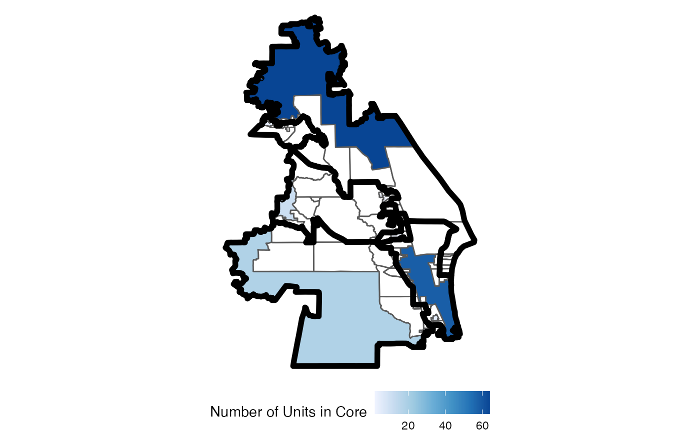

Creates a grouping ID to unite geographies and perform analysis on a smaller
set of precincts. It identifies all precincts more than boundary edges
of a district district boundary. Each contiguous group of precincts more than
boundary steps away from another district gets it own group. Some
districts may have multiple, disconnected components that make up the core,
but each of these is assigned a separate grouping id so that a call to
sf::st_union() would produce only connected pieces.
make_cores(.data = get0(".", parent.frame()), boundary = 1, focus = NULL) redist.identify.cores(adj, plan, boundary = 1, focus = NULL, simplify = TRUE)
| .data | a |
|---|---|
| boundary | Number of steps to check for. Defaults to 1. |
| focus | Optional. Integer. A single district to focus on. |
| adj | zero indexed adjacency list. |
| plan | An integer vector or matrix column of district assignments. |
| simplify | Optional. Logical. Whether to return extra information or just grouping ID. |
integer vector (if simplify is false). Otherwise it returns a tibble with the grouping
variable as group_id and additional information on connected components.
This is a loose interpretation of the
NCSL's summary
of redistricting criteria to preserve the cores of prior districts. Using the
adjacency graph for a given plan, it will locate the precincts on the
boundary of the district, within boundary steps of the edge. Each of
these is given their own group. Each remaining entry that is not near the
boundary of the district is given an id that can be used to group the
remainder of the district by connected component. This portion is deemed the
core of the district.
[redist.plot.cores()] for a plotting function
data(fl250) adj <- redist.adjacency(fl250) plan <- redist.smc(adj = adj, total_pop = fl250$pop, nsims = 1, ndists = 4)$plans#> SEQUENTIAL MONTE CARLO #> Sampling 1 250-unit maps with 4 districts and population between 194829 and 198764. #> Making split 1 of 3 #> Note: maximum hit; falling back to naive k estimator. #> Using k = 1 #> 20.0% acceptance rate. #> Resampling effective sample size: 1.0 (100.0% efficiency). #> Making split 2 of 3 #> Using k = 1 #> 11.1% acceptance rate. #> Resampling effective sample size: 1.0 (100.0% efficiency). #> Making split 3 of 3 #> Note: maximum hit; falling back to naive k estimator. #> Using k = 1 #> 14.3% acceptance rate. #> Resampling effective sample size: 1.0 (100.0% efficiency).core <- redist.identify.cores(adj = adj, plan = plan) redist.plot.cores(shp = fl250, plan = plan, core = core)